/* erik-johansson - proofs */
12 plates. Deterministic overlays rendered by the composition-analysis skill.
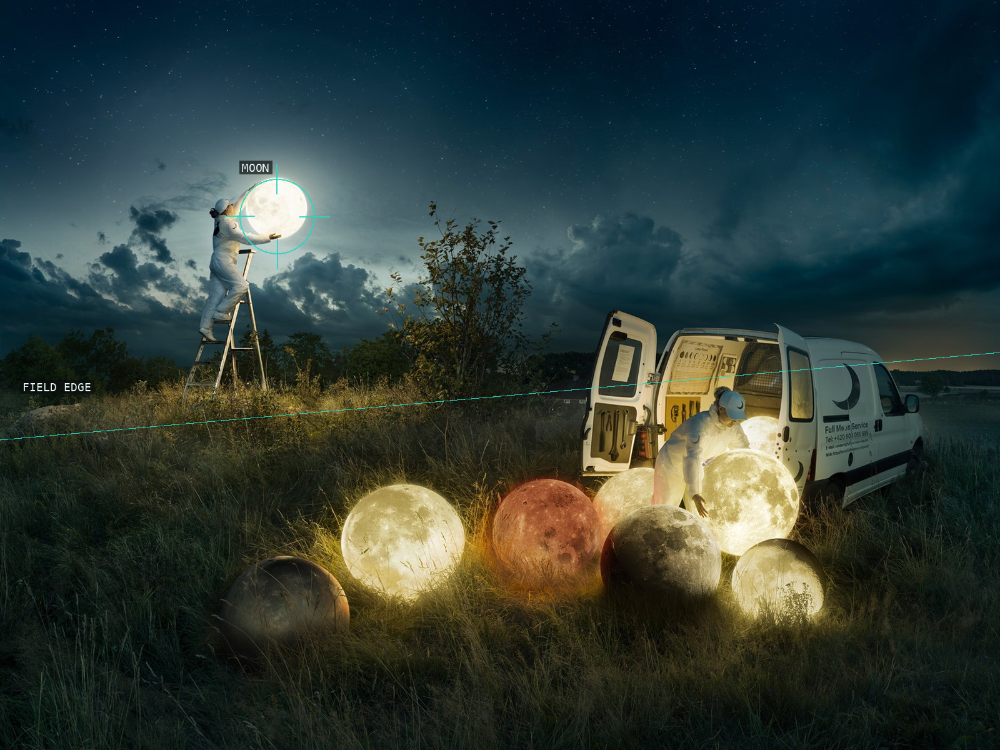
01-full-moon-service-2017
The moon and the slanting field boundary make scale feel physically anchored.
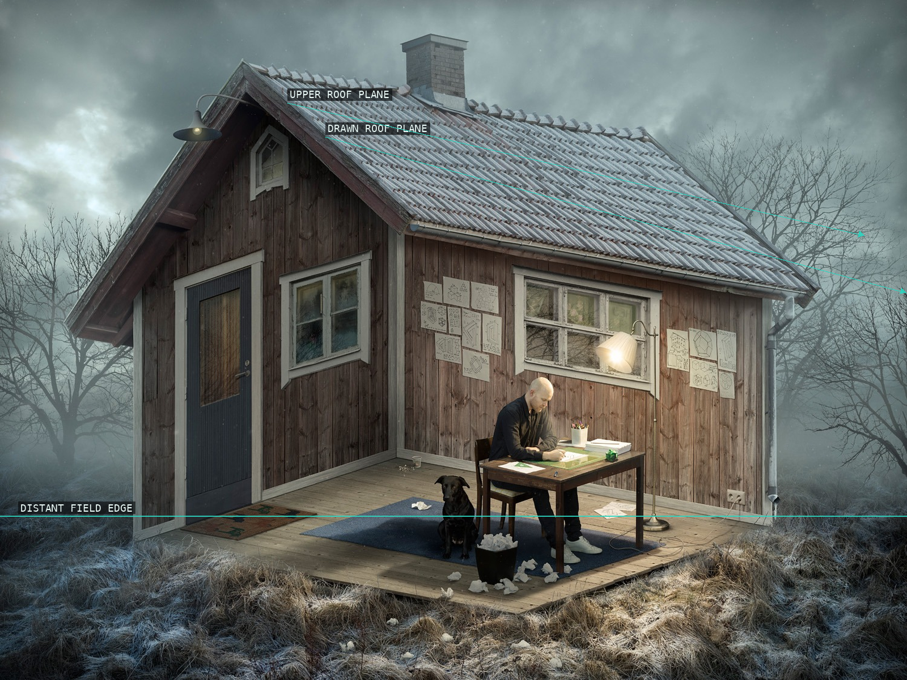
02-the-architect-2015
The roof planes make the house dominate the modest drawing table below.
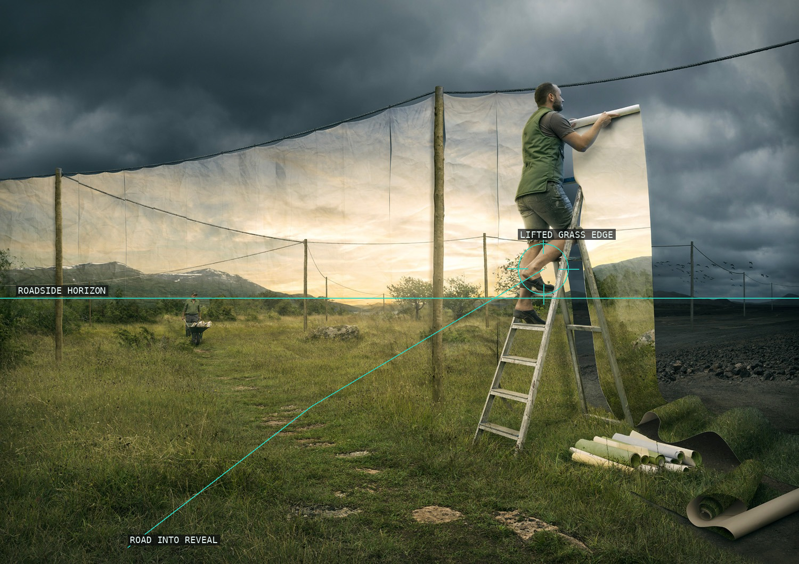
03-the-cover-up-2013
The road leads directly into the lifted edge that changes the landscape's rules.
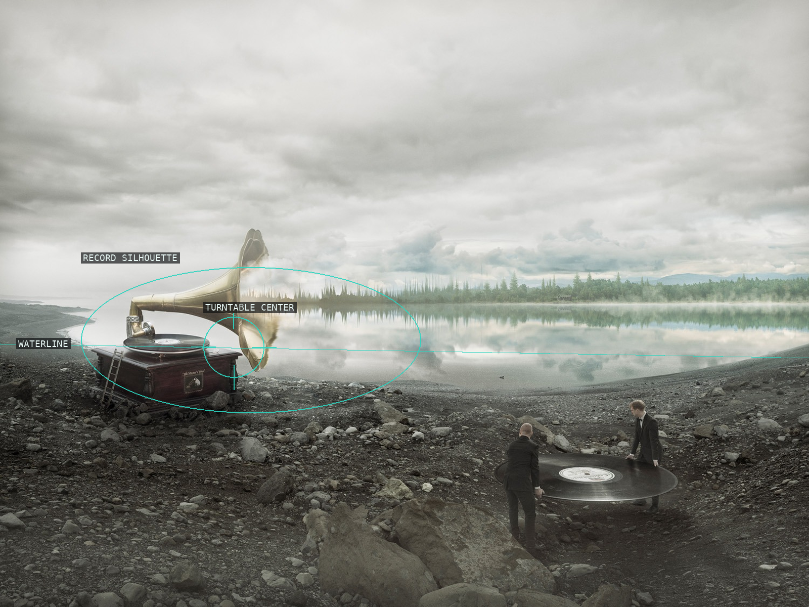
04-soundscapes-2015
The gramophone and carried record turn a quiet shore into an object-scale scene.
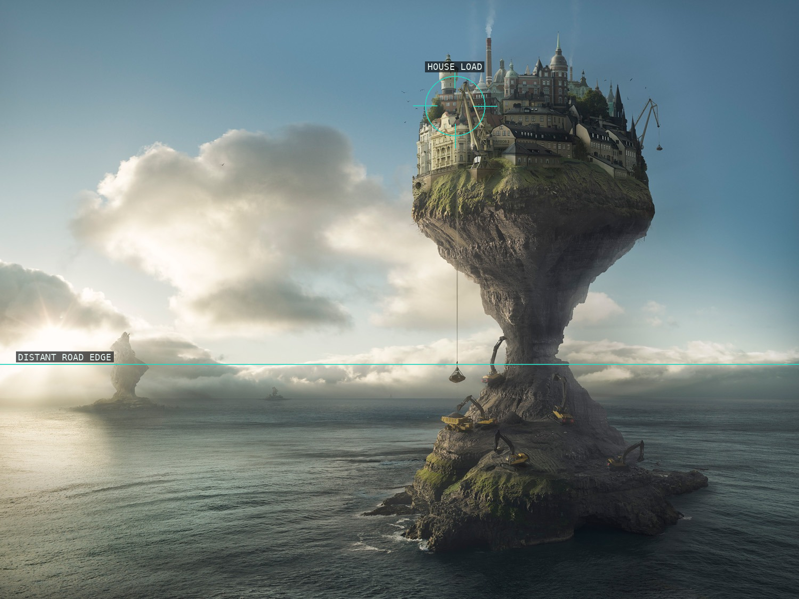
05-demand-and-supply-2017
Dense architecture rises from an improbable island above a quiet, level sea.
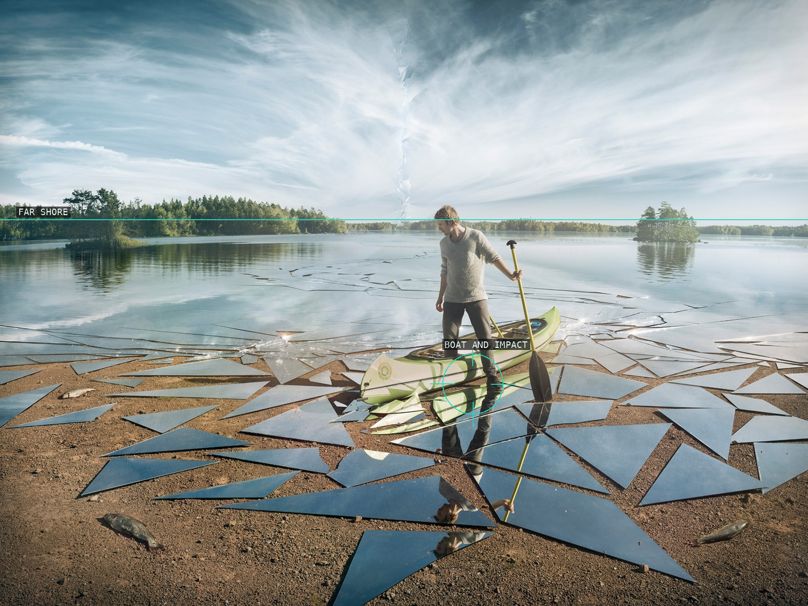
06-impact-2016
A small boat anchors the disruption that opens across the reflective surface.
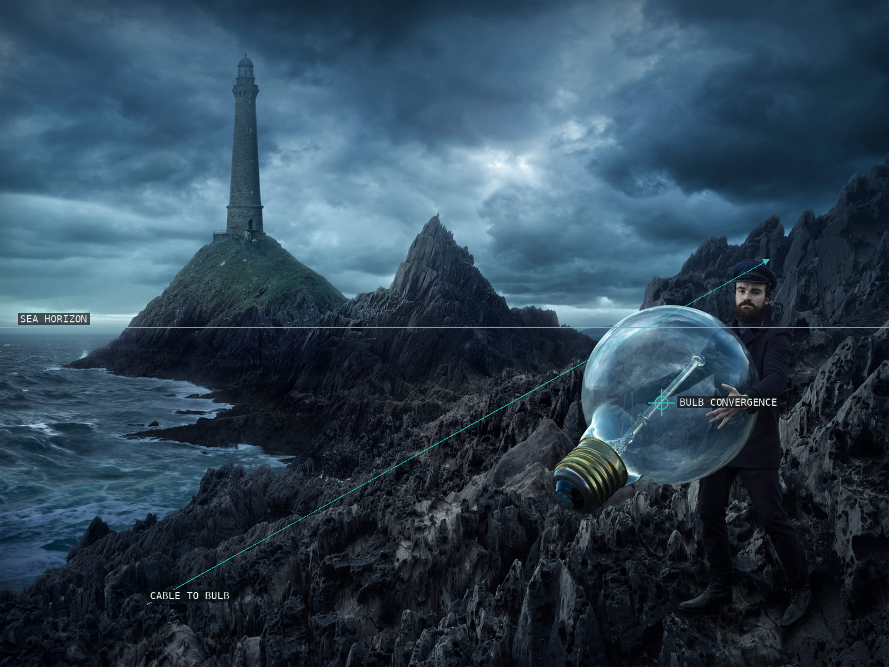
07-the-light-keeper-2018
The lighthouse and giant bulb give the dark seascape two competing points of light.
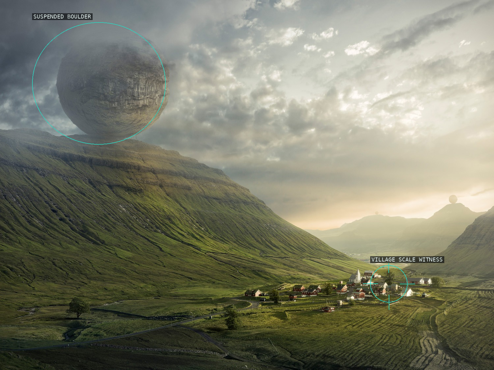
08-imminent-2016
The suspended boulder gains scale from the tiny settlement below it.
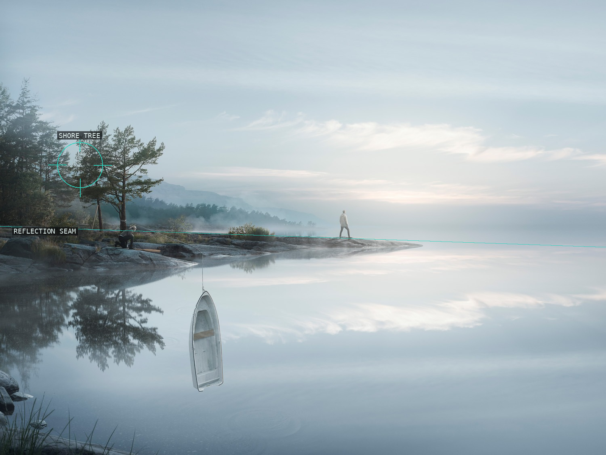
09-endless-reflections-2015
The shore tree, overturned boat, and reflection seam suspend a quiet shoreline.
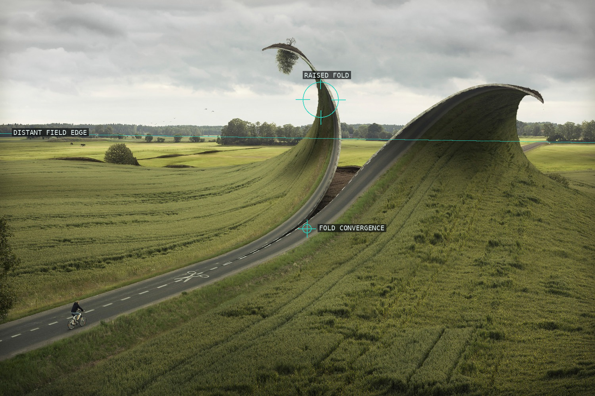
10-cut-and-fold-2012
The raised crease redirects the landscape's perspective without breaking its texture.
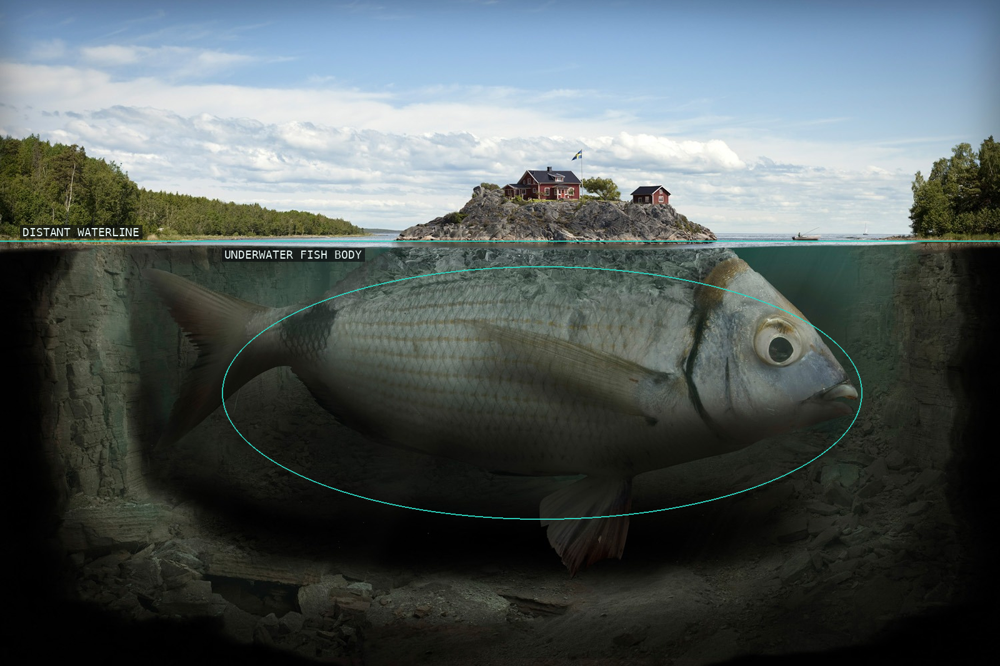
11-fishy-island-2009
The waterline stacks an island directly over the giant fish beneath it.
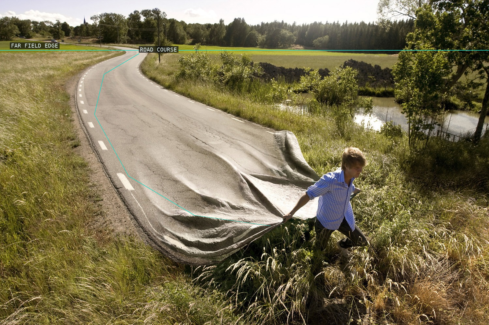
12-go-your-own-road-2008
The road's curve becomes both a route through the picture and a carried object.